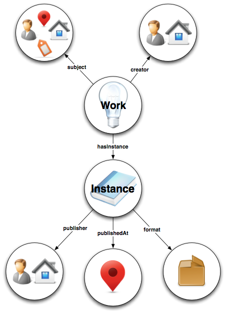

In translating the MARC 21 format to a Linked Data model it is important to deconstruct and then reconstruct the informational assets that comprise MARC. The BIBFRAME Model consists of the following core classes:
- Creative Work - a resource reflecting a conceptual essence of the cataloging resource.
- Instance - a resource reflecting an individual, material embodiment of the Work.
- Authority - a resource reflecting key authority concepts that have defined relationships reflected in the Work and Instance. Example of Authority Resources include People, Places, Topics, Organizations, etc. One important concept in Authority is domain, which is the entity taking responsibility for the recognition, organization and maintenance (to ensure integrity) of the authoritative resources.
- Annotation - a resource that enhances our knowledge about another resource when knowing, minimally, 'who' is doing the annotating is important. Library Holdings, Cover Art and Reviews are examples types.
These Information Resources can then be re-assembled into a coherent architecture that allows for cooperative cataloging at a far more granular level than before. Then, as we leverage the Web as an architecture for data, whenever updates to these Resources are performed (e.g. someone adds new information about a Person, new mappings related to a Subject, etc.) notification events can occur to automatically update systems that reference these Resources. Further, these information assets can now be more effectively utilized at a granular level and provide a richer substrate in which local collections, special collections and third party data can easily annotate and contextualize cooperative library content.
Learn More
Bibliographic Framework as a Web of Data: Linked Data Model and Supporting Services [PDF, 2.91 MB] (November 21, 2012)